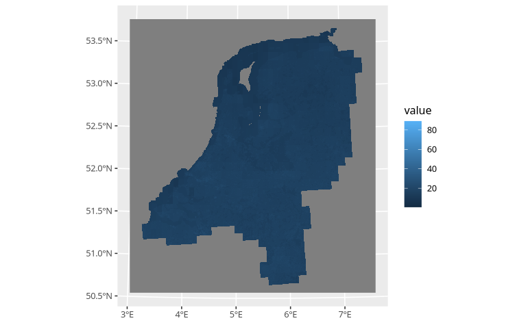

Spacial plotting
plotting.RmdThe data you manipulating an generating with postcodElapse, is
inherently spacial. Even though that might not seem,
postcodElapse() strips all spacial data form its output.
For those who want to plot spatially I recommend installing the tidyverse and tidyterra Packages.
Fist I am introducing you to plotting backgrounds, maps or images then
laying the air pollution estimates on top.
Backgrounds
For plotting spacial data you of course need a background when
working with postcodElapse most useful is an map. Consequently ELAPSE is
an map, just one of air pollution for this demo I will be using it. The
loadElapse() returns a spatraster containing ELAPSE, which
can be plotted using ggplot() with
goem_spatraster(), see below.
elapse <- loadElapse()
ggplot() +
geom_spatraster(data = elapse)
#> <SpatRaster> resampled to 500490 cells.
#> ! `tidyterra::geom_spatraster()`: Plotting 6 overlapping layers: BCFULL,
#> NO2FULL, O3FULLa, O3FULLc, O3FULLw, and PM25FULLt. Either:
#>
#> • Use `facet_wrap(~lyr)` to facet layers.
#> • Use `aes(fill = <name_of_layer>)` to display a single layer.
geom_spatraster() when given no extra options combines
all layers into a single one. This does not look very interesting so we
can do what tidyterra suggests which is using an facet. In addition I am
adding scale_fill_grass_c() making the fill look better,
other variants exist check the docs.
If you want to plot an specific layer I use sub-setting
i.e. data = elaspe$NO2FULL.
elapse <- loadElapse()
ggplot() +
geom_spatraster(data = elapse) + # Use subset "$" to plot a specific layer.
scale_fill_grass_c() +
facet_wrap(~ lyr)
Lots better! Standard ggplot2 rules apply for editing these plots so have fun experimenting.
One important thing when making the plot you can pass the spatraster
directly to the ggplot() statement. But this will bite you
when you start layering data. I recommend passing your data directly to
the layer with the following statement:geom_spatraster(data = <your data>, <more parameters>).
Layers
Just plotting an maps is not very informational we need to add more layers, I will be showing how to plot the spacial data postcodElapse uses internaly. For that we first have to look at the output of the pollutionFrom*() functions.
pollutionFromPc6()
Returns almost the exactly the same data as
postcodElapse(). Except the return type is a simple
features collection, i.e. it has the extra column “geom” containing
multipolygons. Which are just areas on a map, in addition to metadata
describing the coordinate system. See below with the UMCG.
library(postcodElapse)
pollutionFromPc6("9713GZ", "../../data/cbs_pc6_2024.gpkg")
#> Guessed db type to be: PC6
#> Simple feature collection with 1 feature and 20 fields
#> Geometry type: MULTIPOLYGON
#> Dimension: XY
#> Bounding box: xmin: 234303.1 ymin: 582188.6 xmax: 234584.6 ymax: 582625.4
#> Projected CRS: Amersfoort / RD New
#> postcode n BCFULL_avg NO2FULL_avg O3FULLa_avg O3FULLc_avg O3FULLw_avg
#> 1 9713GZ NA 1.76874 29.60128 61.81072 45.97693 79.03543
#> PM25FULLt_avg BCFULL_min NO2FULL_min O3FULLa_min O3FULLc_min O3FULLw_min
#> 1 15.18162 1.753165 28.93738 61.4945 45.72406 78.30206
#> PM25FULLt_min BCFULL_max NO2FULL_max O3FULLa_max O3FULLc_max O3FULLw_max
#> 1 14.93575 1.82462 30.95777 62.07064 46.13897 79.57148
#> PM25FULLt_max geom
#> 1 15.37438 MULTIPOLYGON (((234417.6 58...pollutionFromBag()
Produces very different data due to BAG containing the position of all buildings in the Netherlands. It outputs the pollution estimates for each building in the given postcodes. No average, no “n”m in addition to the geom column containing points describing the location of that building. And again with the UMCG.
library(postcodElapse)
pollutionFromBag("9713GZ", "../../data/bag-light.gpkg")plotting
Adding the output of these function to an plot is as simple as adding
a geom_sf(), below I plotted the location of UMCG on the
NO2 layer of ELAPSE.
library(tidyverse)
library(tidyterra)
library(postcodElapse)
elapse <- loadElapse()
UMCG <- pollutionFromBag("9713GZ" , "../../data/bag-light.gpkg")
ggplot() +
geom_spatraster(data = elapse$NO2FULL) +
geom_sf(data = UMCG, aes(geometry = geom), fill = "red") +
scale_fill_grass_c()But you have to consider the coordinate system when working with the internal ELAPSE and data generated by postcodElapse your fine. If you plot the data and nothing lines up. Ensure you background has an coordinate system off “EPSG:28992”, if they don’t mach you need to load the []